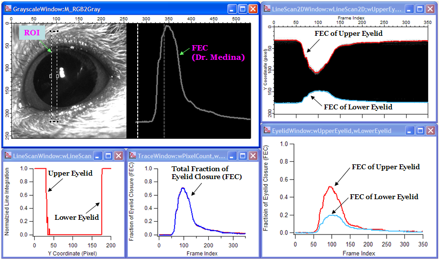
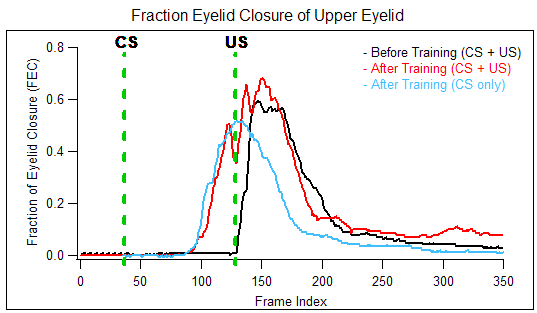
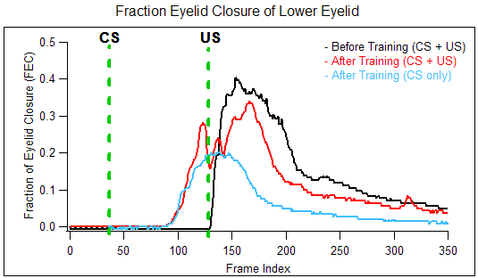

EyelidTracker
Test #6. Quantify Positions of the Upper and the Lower Eyelids Separately
Videos:
Videos were generously provided by Dr. Javier Medina in the University of Pennsylvania.
- Video #1: Before training. (CS + US)
- Video #2: After training. (CS + US)
- Video #3: After training (CS only)
Download:
EyelidTracker_v03.04.ipf
Results:
Condition: Threshold = 60
Figure and video description

Video #1: Before training (CS + US)
Video #2: After training (CS + US)
Video #3: After training (CS only)
Fraction Eyelid Closure of Upper Eyelid

Fraction Eyelid Closure of Lower Eyelid
